0.10/min
captures per minute at a 10-min interval
Captures every 1 second to 3 hours, drops identical frames, stitches what's left into a daily film. Search visible text. Ship it to YouTube. Stays entirely on your machine.
3-day free trial · $19 one-time, lifetime updates, up to 5 Macs · Apple Silicon · macOS 14 Sonoma or later.
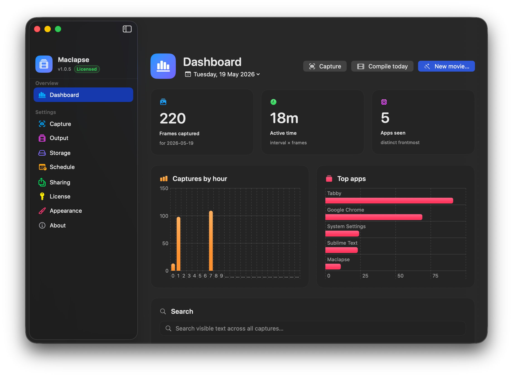
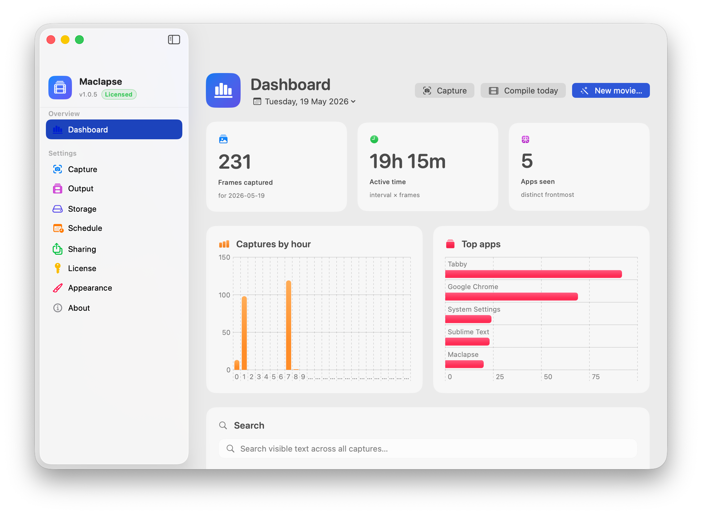
From every second to every three hours. Tap a chip or dial in a custom h : m : s. Multi-display selection composites preserving your arrangement. The app gently warns you under 30 s when the storage math turns serious.
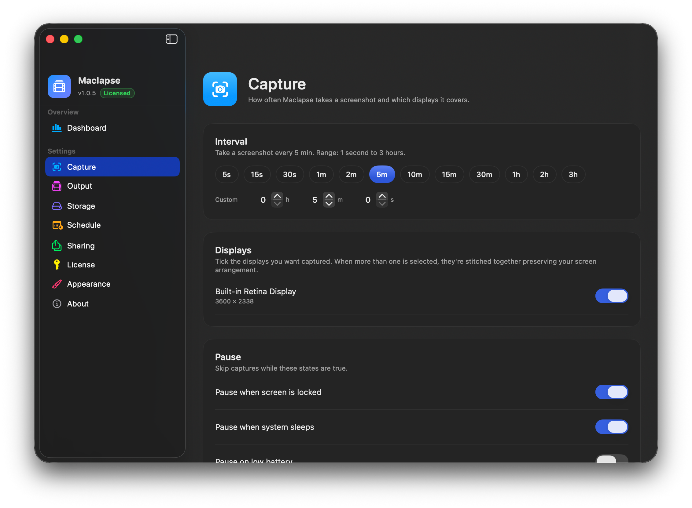
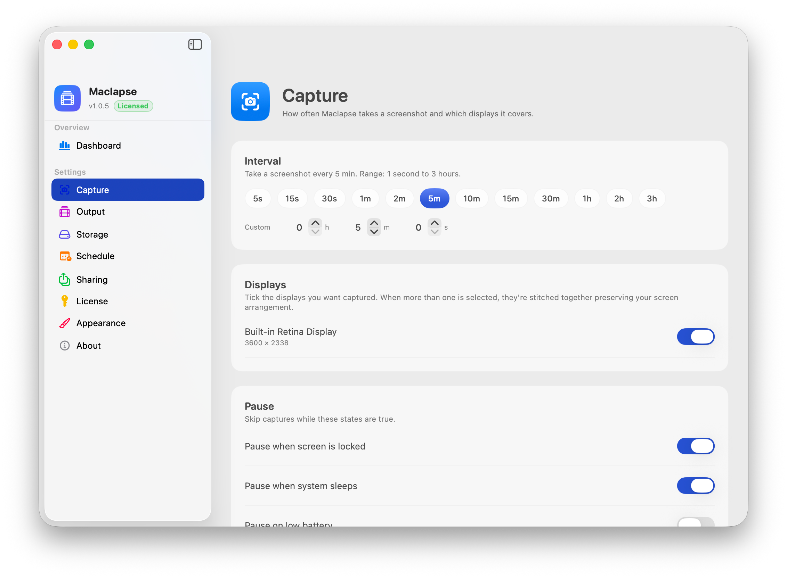
Three live tiles recompute the instant you nudge the interval. The daily MP4 lands at midnight — or whenever you say.
captures per minute at a 10-min interval
what lands in your day folder each hour
worth ≈ 4.8 seconds at 30 fps
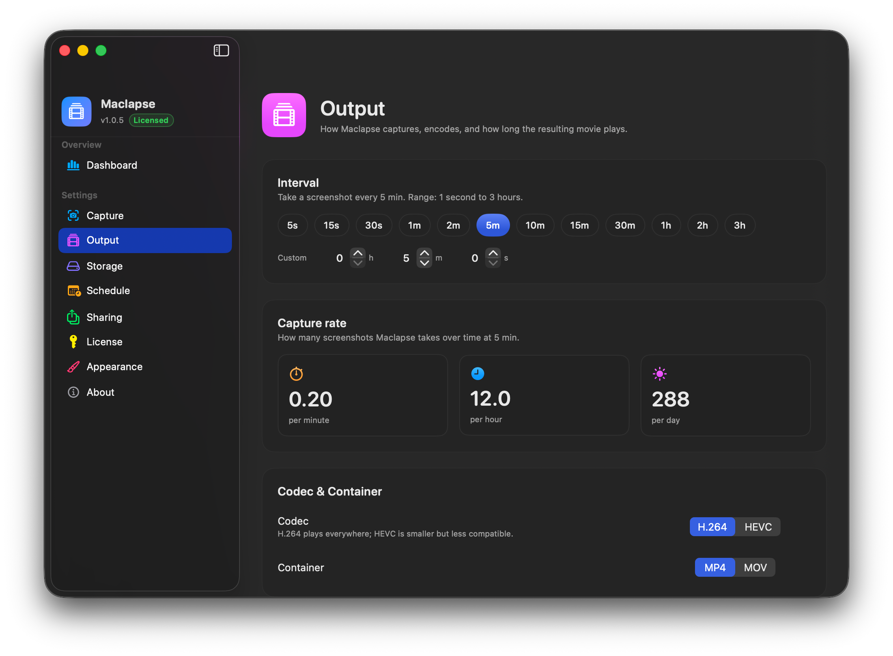
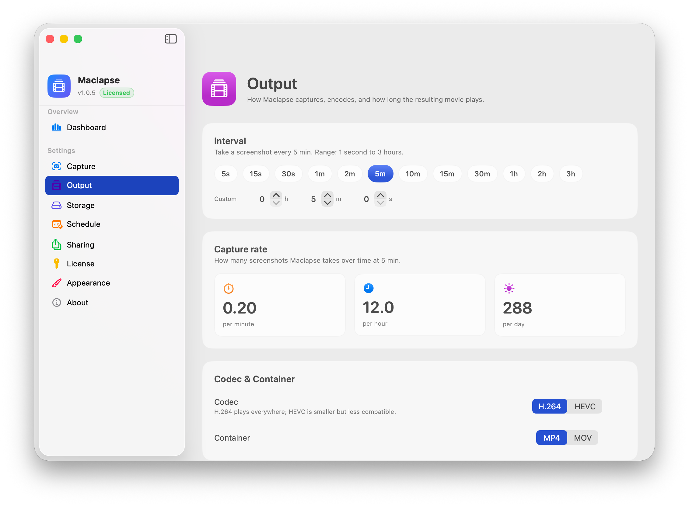
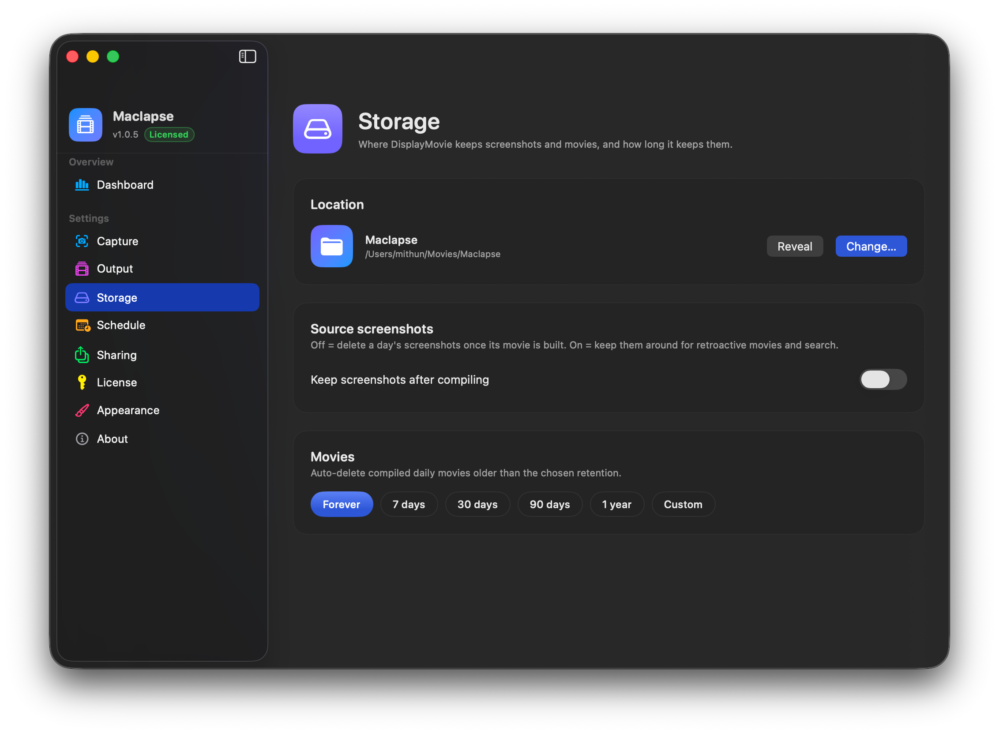
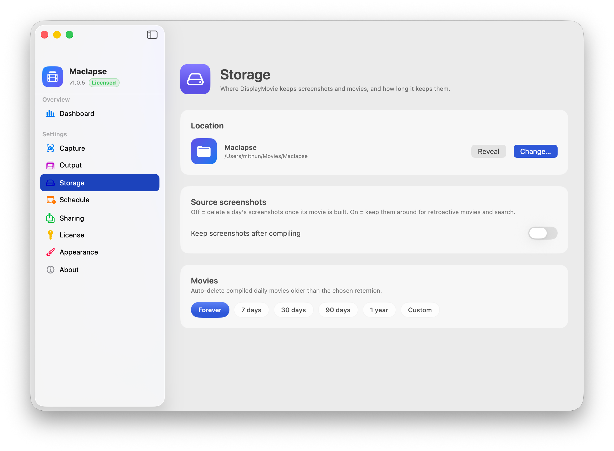
Pick a folder once. Decide whether to keep PNGs after compile. Pick a retention.
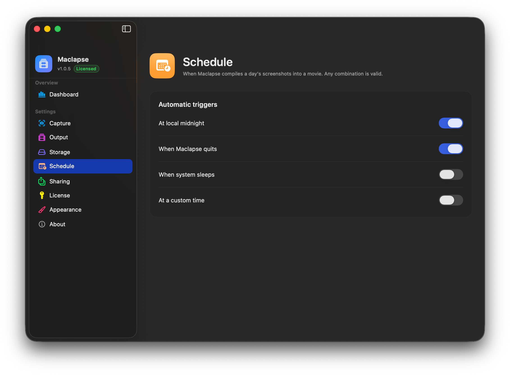
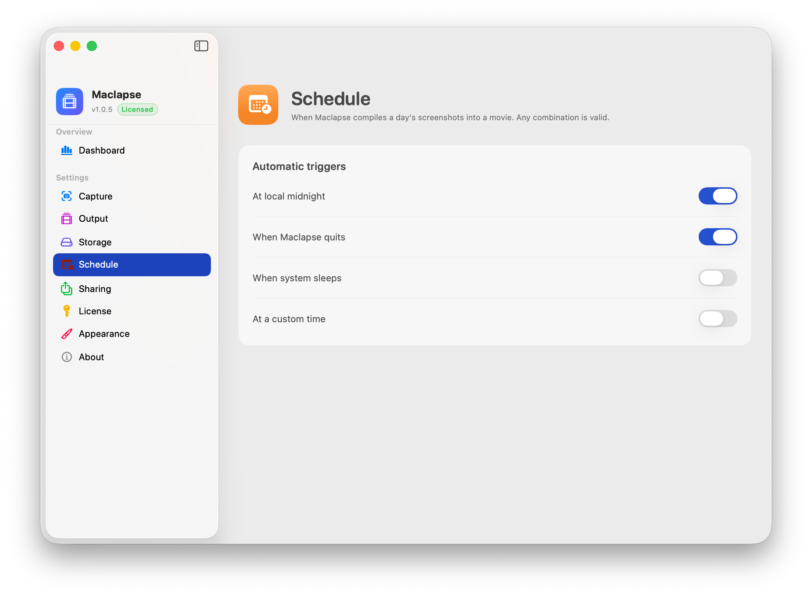
Midnight, on quit, on sleep, custom time. Combine any of them.
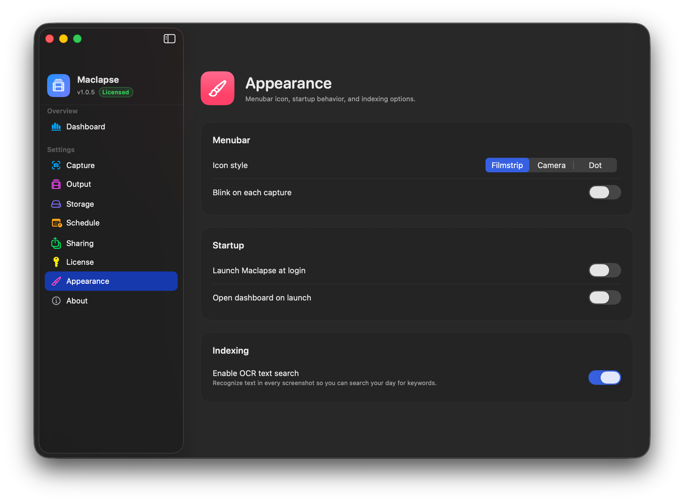
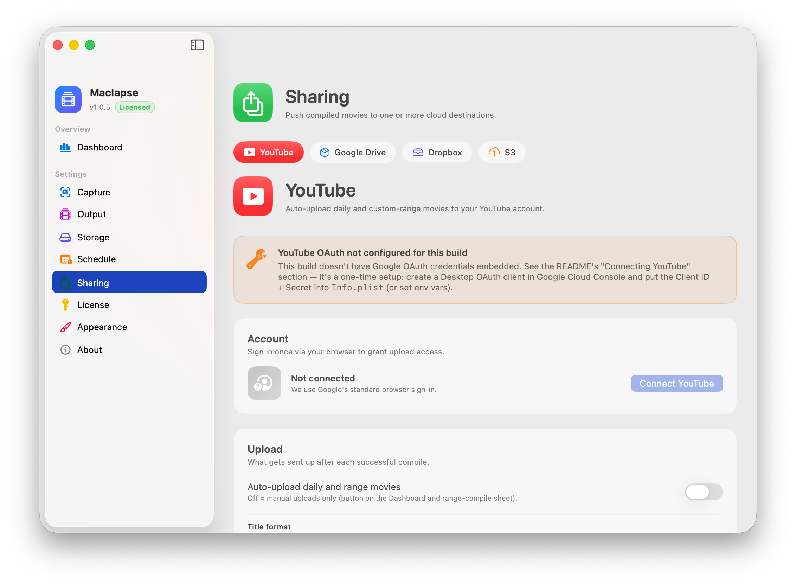
Filmstrip, camera, or dot menubar icon. Optional blink. Login at launch.
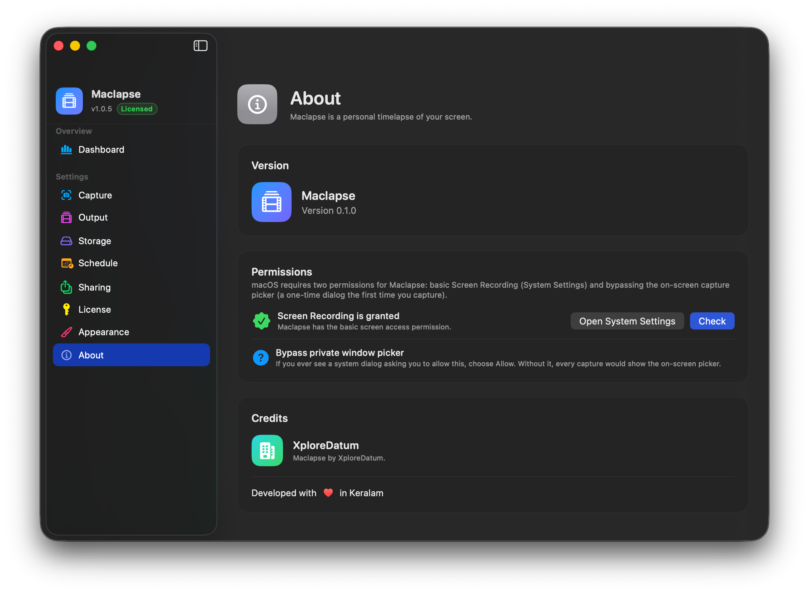
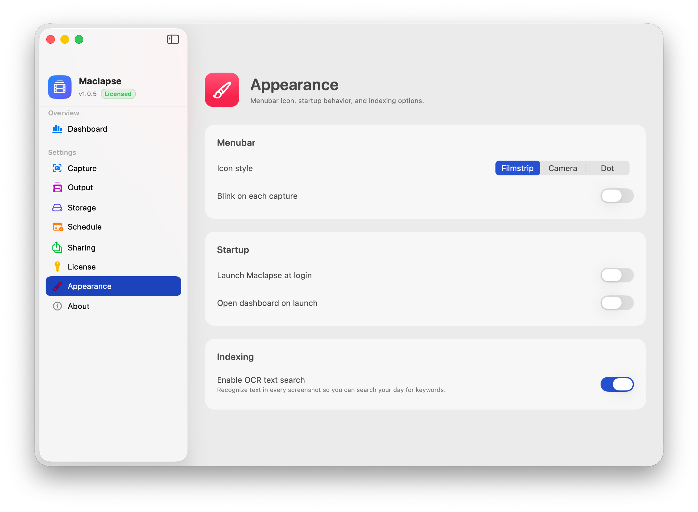
Both screen-recording permissions in one place — Settings and the picker bypass.
A silent screenshot every 1 s to 3 h via ScreenCaptureKit.
SCScreenshotManager
SHA-256 vs. the previous frame. Identical → dropped.
CryptoKit · SHA256
Unique frames stitched into one MP4 via AVFoundation.
AVAssetWriter
OCR search, any date range, optional YouTube upload.
Vision · FTS5 · YouTube
No telemetry. No analytics. OCR runs locally via Apple Vision. The metadata index is a local SQLite file. Movies live where you tell them to. The only outbound call Maclapse ever makes is to YouTube — and only after you explicitly connect.
Signed and notarized for macOS Gatekeeper. Apple Silicon. Lifetime updates on up to 5 Macs.
Download .dmg Buy ($19) ›Captures take a few hundred milliseconds via ScreenCaptureKit on your chosen interval. The default 5-minute cadence is undetectable in practice. SHA-256 over a Retina frame is < 100 ms on Apple Silicon.
Retina PNGs run 1–5 MB each. At 5-min intervals over an 8-hour day, expect ~300–500 MB before dedupe. With Keep screenshots after compile off, the day's PNGs are deleted once the MP4 is built.
macOS gates screen recording twice — a coarse "Screen Recording" toggle in System Settings, plus a per-app dialog asking to "bypass the system picker". The first-launch wizard surfaces both inline.
Currently Apple Silicon only. The codebase compiles for x86_64 but ScreenCaptureKit's performance on Intel hasn't been tuned, so we don't ship that build yet.
YouTube is fully implemented in v1.0. Google Drive, Dropbox and S3 destinations are scaffolded in the UI and ship working in v1.1.
3 days from first launch, full access to every feature. After that, capture and compile are paused until you paste a license key (Settings → License). Existing captures and movies stay accessible regardless.
Yes — 14 days, no questions, via Polar's customer portal.
Drop the latest signed DMG over the previous one. Settings, screenshots, and movies are preserved across versions. Updates are included for the lifetime of the license.